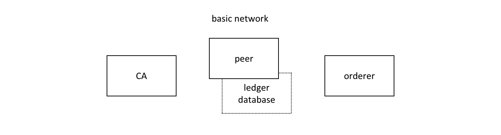
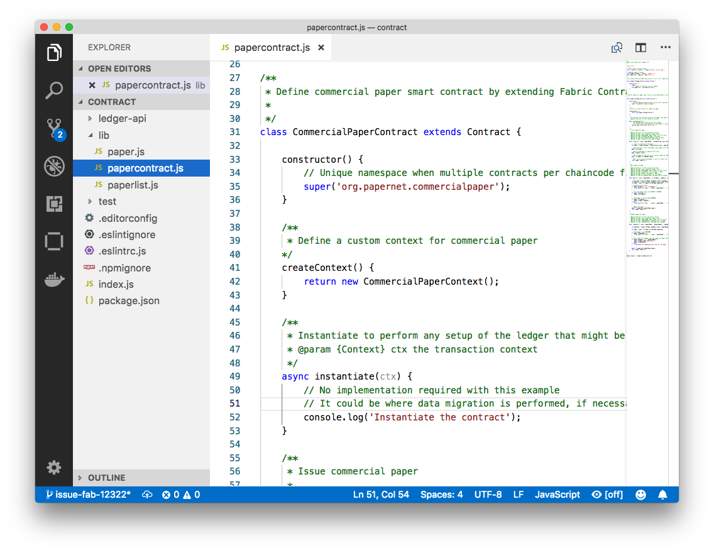
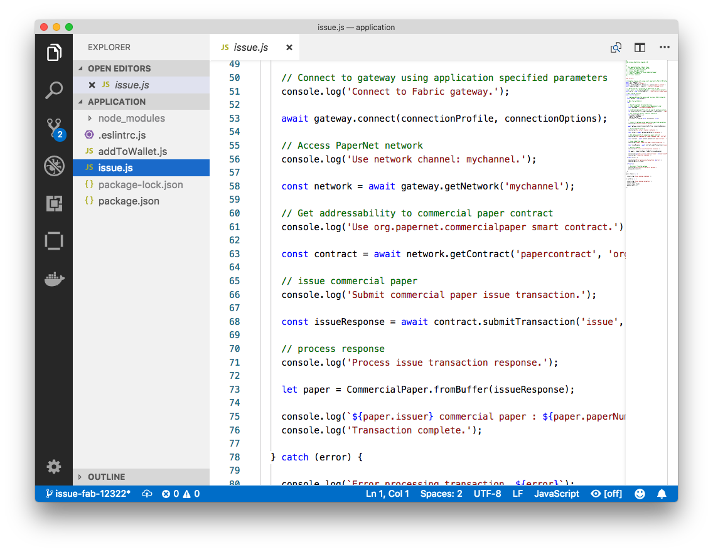

Commercial paper tutorial¶
受众 ：架构师、应用程序和智能合约开发者、管理员。
本教程会知道你怎么样安装使用一个商业票据的应用和智能合约。它是一个面向任务的主题，所以它强调过程而不是概念。当您想更详细地理解这些概念时，您可以阅读“应用程序开发”主题。
 commercialpaper.tutorial In this tutorial
two organizations, MagnetoCorp and DigiBank, trade commercial paper with each
other using PaperNet, a Hyperledger Fabric blockchain network.
commercialpaper.tutorial In this tutorial
two organizations, MagnetoCorp and DigiBank, trade commercial paper with each
other using PaperNet, a Hyperledger Fabric blockchain network.
一旦你建立了一个基本的网络，你将扮演伊莎贝拉（Isabella），她是磁石公司的一名员工，将代表磁石公司发行一份商业票据。然后，你将转换角色，扮演电子银行(DigiBank)的员工巴拉吉(Balaji)，他将购买这张商业票据，持有一段时间，然后跟MagnetoCorp兑换一小笔利润。
您将扮演不同组织中的开发人员、最终用户和管理员的角色，执行以下步骤，这些步骤旨在帮助您理解作为两个独立工作的不同组织协作是什么样子的，但是要根据超级账本网络中相互同意的规则进行协作。
Understand the structure of a smart contract
Work as an organization, MagnetoCorp, to install and instantiate smart contract
Understand the structure of a MagnetoCorp application, including its dependencies
Configure and use a wallet and identities
Run a MagnetoCorp application to issue a commercial paper
Understand how a second organization, Digibank, uses the smart contract in their applications
As Digibank, run applications that buy and redeem commercial paper
本教程已经在MacOS和Ubuntu上进行了测试，应该可以在其他Linux发行版上使用。Windows版本正在开发中。
Prerequisites¶
在开始之前，您必须安装本教程所需的一些必备技术软件。我们已经把这些降到最低，这样你就可以快速开始了。
你必须安装以下技术软件:
Node version 8.9.0, or higher. Node is a JavaScript runtime that you can use to run applications and smart contracts. You are recommended to use the LTS (Long Term Support) version of node. Install node here.
Docker version 18.06, or higher. Docker help developers and administrators create standard environments for building and running applications and smart contracts. Hyperledger Fabric is provided as a set of Docker images, and the PaperNet smart contract will run in a docker container. Install Docker here.
你会发现安装以下技术软件很有帮助:
A source code editor, such as Visual Studio Code version 1.28, or higher. VS Code will help you develop and test your application and smart contract. Install VS Code here.
Many excellent code editors are available including Atom, Sublime Text and Brackets.
随着您对应用程序和智能合约开发越来越有经验，您可能会发现安装以下技术很有帮助。当你第一次运行教程时，不需要安装这些:
Node Version Manager. NVM helps you easily switch between different versions of node – it can be really helpful if you’re working on multiple projects at the same time. Install NVM here.
Download samples¶
商业票据教程是一个名为fabric -samples的公共GitHub仓库中保存的超级账本示例之一。在您的机器上运行本教程时，您的第一个任务是下载fabric-samples仓库。
 commercialpaper.download Download the
commercialpaper.download Download the
fabric-samples GitHub repository to your local machine.
$GOPATH是超级账本中的一个重要环境变量;它标识要安装的根目录。正确使用任何一种编程语言都是非常重要的!打开一个新的终端窗口，使用env命令检查$GOPATH是否已设置:
$ env
...
GOPATH=/Users/username/go
NVM_BIN=/Users/username/.nvm/versions/node/v8.11.2/bin
NVM_IOJS_ORG_MIRROR=https://iojs.org/dist
...
如果没有设置$GOPATH，请使用以下说明
You can now create a directory relative to $GOPATH where fabric-samples will
be installed:
$ mkdir -p $GOPATH/src/github.com/hyperledger/
$ cd $GOPATH/src/github.com/hyperledger/
使用git克隆命令将fabric-samples库复制到这个位置:
$ git clone https://github.com/hyperledger/fabric-samples.git
请随意检查fabric-samples的目录结构
$ cd fabric-samples
$ ls
CODE_OF_CONDUCT.md balance-transfer fabric-ca
CONTRIBUTING.md basic-network first-network
Jenkinsfile chaincode high-throughput
LICENSE chaincode-docker-devmode scripts
MAINTAINERS.md commercial-paper README.md
fabcar
请注意商业票据目录——这就是我们的示例所在的位置!
您现在已经完成了教程的第一阶段!在继续操作时，将为不同的用户和组件打开多个命令窗口。例如:
to run applications on behalf of Isabella and Balaji who will trade commercial paper with each other
to issue commands to on behalf of administrators from MagnetoCorp and DigiBank, including installing and instantiating smart contracts
to show peer, orderer and CA log output
我们将清楚地说明什么时候应该从特定的命令窗口运行命令;例如
(isabella)$ ls
指示您应该从Isabella的窗口运行ls命令。
Create network¶
本教程目前使用的基本网络;它将很快更新到一个配置，更好地反映了PaperNet的多组织结构。目前，这个网络足以向您展示如何开发应用程序和智能合约。
commercialpaper.network The Hyperledger Fabric basic network comprises a peer and its ledger database, an orderer and a certificate authority (CA). Each of these components runs as a docker container.
peer节点、它的分类账、orderer节点和CA都在各自的docker容器中运行。在生产环境中，组织通常使用与其他系统共享的现有ca;他们并不专注于Fabric网络。
您可以使用fabric-samplesbasic-network目录中包含的命令和配置来管理基本网络。让我们使用start.sh shell脚本启动本地机器上的网络：
$ cd fabric-samples/basic-network
$ ./start.sh
docker-compose -f docker-compose.yml up -d ca.example.com orderer.example.com peer0.org1.example.com couchdb
Creating network "net_basic" with the default driver
Pulling ca.example.com (hyperledger/fabric-ca:)...
latest: Pulling from hyperledger/fabric-ca
3b37166ec614: Pull complete
504facff238f: Pull complete
(...)
Pulling orderer.example.com (hyperledger/fabric-orderer:)...
latest: Pulling from hyperledger/fabric-orderer
3b37166ec614: Already exists
504facff238f: Already exists
(...)
Pulling couchdb (hyperledger/fabric-couchdb:)...
latest: Pulling from hyperledger/fabric-couchdb
3b37166ec614: Already exists
504facff238f: Already exists
(...)
Pulling peer0.org1.example.com (hyperledger/fabric-peer:)...
latest: Pulling from hyperledger/fabric-peer
3b37166ec614: Already exists
504facff238f: Already exists
(...)
Creating orderer.example.com ... done
Creating couchdb ... done
Creating ca.example.com ... done
Creating peer0.org1.example.com ... done
(...)
2018-11-07 13:47:31.634 UTC [channelCmd] InitCmdFactory -> INFO 001 Endorser and orderer connections initialized
2018-11-07 13:47:31.730 UTC [channelCmd] executeJoin -> INFO 002 Successfully submitted proposal to join channel
注意docker-compose -f docker-compose.yml up -d ca.example.com… …命令如何从DockerHub中提取四个超级账本容器映像，然后启动它们。这些容器拥有用于这些超级账本组件的软件的最新版本。请随意探索basic-network目录——在本教程中，我们将使用它的大部分内容。
您可以使用docker ps命令列出运行基本网络组件的docker容器
$ docker ps
CONTAINER ID IMAGE COMMAND CREATED STATUS PORTS NAMES
ada3d078989b hyperledger/fabric-peer "peer node start" About a minute ago Up About a minute 0.0.0.0:7051->7051/tcp, 0.0.0.0:7053->7053/tcp peer0.org1.example.com
1fa1fd107bfb hyperledger/fabric-orderer "orderer" About a minute ago Up About a minute 0.0.0.0:7050->7050/tcp orderer.example.com
53fe614274f7 hyperledger/fabric-couchdb "tini -- /docker-ent…" About a minute ago Up About a minute 4369/tcp, 9100/tcp, 0.0.0.0:5984->5984/tcp couchdb
469201085a20 hyperledger/fabric-ca "sh -c 'fabric-ca-se…" About a minute ago Up About a minute 0.0.0.0:7054->7054/tcp ca.example.com
看看你是否可以将这些容器映射到基本网络(你可能需要水平滚动来定位信息):
A peer
peer0.org1.example.comis running in containerada3d078989bAn orderer
orderer.example.comis running in container1fa1fd107bfbA CouchDB database
couchdbis running in container53fe614274f7A CA
ca.example.comis running in container469201085a20
这些容器都来自一个名为net_basic的docker网络。您可以使用docker network命令查看网络:
$ docker network inspect net_basic
{
"Name": "net_basic",
"Id": "62e9d37d00a0eda6c6301a76022c695f8e01258edaba6f65e876166164466ee5",
"Created": "2018-11-07T13:46:30.4992927Z",
"Containers": {
"1fa1fd107bfbe61522e4a26a57c2178d82b2918d5d423e7ee626c79b8a233624": {
"Name": "orderer.example.com",
"IPv4Address": "172.20.0.4/16",
},
"469201085a20b6a8f476d1ac993abce3103e59e3a23b9125032b77b02b715f2c": {
"Name": "ca.example.com",
"IPv4Address": "172.20.0.2/16",
},
"53fe614274f7a40392210f980b53b421e242484dd3deac52bbfe49cb636ce720": {
"Name": "couchdb",
"IPv4Address": "172.20.0.3/16",
},
"ada3d078989b568c6e060fa7bf62301b4bf55bed8ac1c938d514c81c42d8727a": {
"Name": "peer0.org1.example.com",
"IPv4Address": "172.20.0.5/16",
}
},
"Labels": {}
}
查看作为单个docker网络的一部分，这四个容器如何使用不同的IP地址。(为了清晰起见，我们将输出缩短了。)
回顾一下:您已经从GitHub下载了Hyperledger Fabric样例库，并且已经在本地机器上运行了基本网络。现在让我们开始扮演磁石公司的角色，他们希望交易商业票据。
Working as MagnetoCorp¶
要监视PaperNet的MagnetoCorp组件，管理员可以使用logspout工具查看一组docker容器的聚合输出。它将不同的输出流收集到一个地方，这样就可以很容易地从一个窗口看到发生了什么。这对于管理员在安装智能合约或开发人员在调用智能合约时非常有用。
现在让我们以MagnetoCorp管理员的身份监视PaperNet。打开fabric-samples目录中的一个新窗口，找到并运行monitordocker.sh脚本，用来启动与docker网络net_basic关联的PaperNet docker容器的logspout工具:
(magnetocorp admin)$ cd commercial-paper/organization/magnetocorp/configuration/cli/
(magnetocorp admin)$ ./monitordocker.sh net_basic
...
latest: Pulling from gliderlabs/logspout
4fe2ade4980c: Pull complete
decca452f519: Pull complete
(...)
Starting monitoring on all containers on the network net_basic
b7f3586e5d0233de5a454df369b8eadab0613886fc9877529587345fc01a3582
注意，如果monitordocker.sh中的默认端口已经在使用，那么可以将端口号传递给上面的命令。
(magnetocorp admin)$ ./monitordocker.sh net_basic <port_number>
这个窗口现在将显示docker容器的输出，所以让我们启动另一个终端窗口，它将允许MagnetoCorp管理员与网络交互。
 commercialpaper.workmagneto A MagnetoCorp
administrator interacts with the network via a docker container.
commercialpaper.workmagneto A MagnetoCorp
administrator interacts with the network via a docker container.
为了与PaperNet交互，MagnetoCorp管理员需要使用超级账本peer命令。方便的是，这些都可以在hyperledger/fabric-tools docker镜像中预先构建。
让我们使用docker-compose命令为管理员启动一个特定于magnetocorp的docker容器:
(magnetocorp admin)$ cd commercial-paper/organization/magnetocorp/configuration/cli/
(magnetocorp admin)$ docker-compose -f docker-compose.yml up -d cliMagnetoCorp
Pulling cliMagnetoCorp (hyperledger/fabric-tools:)...
latest: Pulling from hyperledger/fabric-tools
3b37166ec614: Already exists
(...)
Digest: sha256:058cff3b378c1f3ebe35d56deb7bf33171bf19b327d91b452991509b8e9c7870
Status: Downloaded newer image for hyperledger/fabric-tools:latest
Creating cliMagnetoCorp ... done
再次，查看如何从Docker Hub检索到hyperledger/fabric-tools docker镜像并添加到网络中:
(magnetocorp admin)$ docker ps
CONTAINER ID IMAGE COMMAND CREATED STATUS PORTS NAMES
562a88b25149 hyperledger/fabric-tools "/bin/bash" About a minute ago Up About a minute cliMagnetoCorp
b7f3586e5d02 gliderlabs/logspout "/bin/logspout" 7 minutes ago Up 7 minutes 127.0.0.1:8000->80/tcp logspout
ada3d078989b hyperledger/fabric-peer "peer node start" 29 minutes ago Up 29 minutes 0.0.0.0:7051->7051/tcp, 0.0.0.0:7053->7053/tcp peer0.org1.example.com
1fa1fd107bfb hyperledger/fabric-orderer "orderer" 29 minutes ago Up 29 minutes 0.0.0.0:7050->7050/tcp orderer.example.com
53fe614274f7 hyperledger/fabric-couchdb "tini -- /docker-ent…" 29 minutes ago Up 29 minutes 4369/tcp, 9100/tcp, 0.0.0.0:5984->5984/tcp couchdb
469201085a20 hyperledger/fabric-ca "sh -c 'fabric-ca-se…" 29 minutes ago Up 29 minutes 0.0.0.0:7054->7054/tcp ca.example.com
MagnetoCorp管理员将使用容器562a88b25149中的命令行与PaperNet交互。还要注意logspout容器b7f3586e5d02;这是为monitordocker.sh命令捕获所有其他docker容器的输出。
现在让我们使用这个命令行作为MagnetoCorp管理员与PaperNet进行交互。
Smart contract¶
issue、buy和redeem是PaperNet智能合同的三个核心功能。它被应用于在账本上提交发行、购买和赎回商业票据的交易。我们的下一个任务是研究这个智能合约。
打开一个代表MagnetoCorp开发人员的新终端窗口，并切换到包含MagnetoCorp的智能合约副本的目录，使用您选择的编辑器查看它(本教程中使用VS Code):
(magnetocorp developer)$ cd commercial-paper/organization/magnetocorp/contract
(magnetocorp developer)$ code .
在文件夹的lib目录中，您将看到papercontract.js文件——它包含了商业票据的智能合约!
commercialpaper.vscode1 An example code
editor displaying the commercial paper smart contract in papercontract.js
papercontract.js是一个JavaScript程序，设计用于运行在node.js环境中。注意以下关键程序行:
const { Contract, Context } = require('fabric-contract-api');This statement brings into scope two key Hyperledger Fabric classes that will be used extensively by the smart contract –
ContractandContext. You can learn more about these classes in thefabric-shimJSDOCS.class CommercialPaperContract extends Contract {This defines the smart contract class
CommercialPaperContractbased on the built-in FabricContractclass. The methods which implement the key transactions toissue,buyandredeemcommercial paper are defined within this class.async issue(ctx, issuer, paperNumber, issueDateTime, maturityDateTime...) {This method defines the commercial paper
issuetransaction for PaperNet. The parameters that are passed to this method will be used to create the new commercial paper.Locate and examine the
buyandredeemtransactions within the smart contract.let paper = CommercialPaper.createInstance(issuer, paperNumber, issueDateTime...);Within the
issuetransaction, this statement creates a new commercial paper in memory using theCommercialPaperclass with the supplied transaction inputs. Examine thebuyandredeemtransactions to see how they similarly use this class.await ctx.paperList.addPaper(paper);This statement adds the new commercial paper to the ledger using
ctx.paperList, an instance of aPaperListclass that was created when the smart contract contextCommercialPaperContextwas initialized. Again, examine thebuyandredeemmethods to see how they use this class.return paper.toBuffer();This statement returns a binary buffer as response from the
issuetransaction for processing by the caller of the smart contract.
请随意查看合同目录中的其他文件，以了解智能合约是如何工作的，并在智能合约主题中详细阅读papercontract.js是如何设计的。
Install contract¶
在应用程序调用papercontract之前，必须将其安装到PaperNet中适当的peer节点上。磁石集团(MagnetoCorp)和数字银行(DigiBank)的管理人员可以向各自拥有权限的peer节点上安装papercontract。
 commercialpaper.install A MagnetoCorp
administrator installs a copy of the
commercialpaper.install A MagnetoCorp
administrator installs a copy of the papercontract onto a MagnetoCorp peer.
智能合约是应用程序开发的重点，它包含在一个名为chaincode的超级账本构件中。一个或多个智能合约可以在一个链码中定义，安装一个链码将允许PaperNet中的不同组织使用它们。这意味着只有管理员才需要担心链码;每个人都可以用智能合约来行事。
MagnetoCorp管理员使用peer chaincode install命令将papercontract智能合约从本地机器的文件系统复制到目标peer节点的docker容器中的文件系统。一旦智能合约安装在peer节点上并在通道上实例化，应用程序就可以调用papercontract，并通过putState()和getState() 这样的Fabric APIs与账本数据库交互。检查这些api是如何被ledger-apistate .js中的StateList类使用的。
现在让我们以MagnetoCorp管理员的身份安装papercontract。在MagnetoCorp administrator的命令窗口中，使用docker exec命令在cliMagnetCorp容器中运行peer chaincode install命令:
(magnetocorp admin)$ docker exec cliMagnetoCorp peer chaincode install -n papercontract -v 0 -p /opt/gopath/src/github.com/contract -l node
2018-11-07 14:21:48.400 UTC [chaincodeCmd] checkChaincodeCmdParams -> INFO 001 Using default escc
2018-11-07 14:21:48.400 UTC [chaincodeCmd] checkChaincodeCmdParams -> INFO 002 Using default vscc
2018-11-07 14:21:48.466 UTC [chaincodeCmd] install -> INFO 003 Installed remotely response:<status:200 payload:"OK" >
cliMagnetCorp容器已经将CORE_PEER_ADDRESS=peer0.org1.example.com:7051设置为将其命令指向peer0.org1.example.com，并且远程安装了INFO 003…表明papercontract已成功安装到此peer节点。目前，MagentoCorp的管理人员只需在MagentoCorp的一个peer节点上安装一份papercontract合约。
请注意peer chaincode install命令如何指定智能合约的路径，-p，与cliMagnetoCorp容器的文件系统相关: /opt/gopath/src/github.com/contract。此路径已映射到本地文件系统路径…/organization/magnetocorp/contract。通过magnetocorp/configuration/cli/docker-compose.yml文件:
volumes:
- ...
- ./../../../../organization/magnetocorp:/opt/gopath/src/github.com/
- ...
查看volume指令如何将 organization/magnetocorp映射到/opt/gopath/src/github.com/，从而提供对本地文件系统的容器访问，其中保存了magnetocorp的papercontract智能合约副本。
您可以在这里阅读更多关于docker compose和peer chaincode install 命令。
Instantiate contract¶
现在，包含商业票据智能合约的papercontract链码已安装在所需的PaperNet的peer节点上，管理员可以将其提供给不同的网络通道，以便连接到这些通道的应用程序可以调用它。因为我们使用的是PaperNet的基本网络配置，所以我们只在一个网络通道mychannel中提供papercontract。
 commercialpaper.instant A MagnetoCorp
administrator instantiates
commercialpaper.instant A MagnetoCorp
administrator instantiates papercontract chaincode containing the smart
contract. A new docker chaincode container will be created to run
papercontract.
MagnetoCorp管理员使用peer chaincode instantiate命令在mychannel上实例化papercontract:
(magnetocorp admin)$ docker exec cliMagnetoCorp peer chaincode instantiate -n papercontract -v 0 -l node -c '{"Args":["org.papernet.commercialpaper:instantiate"]}' -C mychannel -P "AND ('Org1MSP.member')"
2018-11-07 14:22:11.162 UTC [chaincodeCmd] InitCmdFactory -> INFO 001 Retrieved channel (mychannel) orderer endpoint: orderer.example.com:7050
2018-11-07 14:22:11.163 UTC [chaincodeCmd] checkChaincodeCmdParams -> INFO 002 Using default escc
2018-11-07 14:22:11.163 UTC [chaincodeCmd] checkChaincodeCmdParams -> INFO 003 Using default vscc
这个命令可能需要几分钟才能完成。
实例化中最重要的参数之一是-P。它指定了papercontract的背书策略，描述了一组必须在确定交易有效之前对其进行背书(执行和签署)的组织。所有的交易，无论是有效的还是无效的，都将被记录在账本区块链上，但是只有有效的交易才会更新世界状态。
在传递过程中，请查看实例化如何传递orderer地址orderer.example.com:7050。这是因为它还向orderer提交了一个实例化事务，orderer将在下一个块中包含该事务，并将该事务分发给已经加入mychannel的所有peer，从而使任何peer都能够在自己的隔离的chaincode容器中执行chaincode。注意，实例化只需要在papercontract将运行的通道发出一次，即使它通常安装在许多peer节点上。
使用docker ps命令查看一个papercontract容器如何被启动:
(magnetocorp admin)$ docker ps
CONTAINER ID IMAGE COMMAND CREATED STATUS PORTS NAMES
4fac1b91bfda dev-peer0.org1.example.com-papercontract-0-d96... "/bin/sh -c 'cd /usr…" 2 minutes ago Up 2 minutes dev-peer0.org1.example.com-papercontract-0
注意，容器名为dev-peer0.org1.example.com-papercontract-0-d96…以指示是哪个peer节点启动了它，以及它正在运行papercontract version 0。
现在我们已经建立并运行了一个基本的PaperNet，并且安装并实例化了papercontract，接下来让我们将注意力转向MagnetoCorp应用程序，它发行了一份商业票据。
Application structure¶
包含在papercontract中的智能合约被称为MagnetoCorp的应用 issue.js。Isabella使用此应用程序向账本发出一笔交易，发行商业票据00001。让我们快速研究一下发行应用程序是如何工作的。
 commercialpaper.application A gateway
allows an application to focus on transaction generation, submission and
response. It coordinates transaction proposal, ordering and notification
processing between the different network components.
commercialpaper.application A gateway
allows an application to focus on transaction generation, submission and
response. It coordinates transaction proposal, ordering and notification
processing between the different network components.
由于发行应用程序代表Isabella提交事务，它首先从Isabella的钱包中检索Isabella的X.509证书，该证书可能存储在本地文件系统或硬件安全模块HSM中。然后，发行应用程序可以利用网关在通道上提交事务。Hyperledger Fabric SDK提供了一个抽象网关，这样应用程序可以在将网络交互委托给网关的同时专注于应用程序逻辑。网关和钱包使编写超级账应用程序变得很简单。
让我们来看看伊莎贝拉将要使用的发行应用程序。为她打开一个单独的终端窗口，在fabric-samples中找到MagnetoCorp /application文件夹:
(magnetocorp user)$ cd commercial-paper/organization/magnetocorp/application/
(magnetocorp user)$ ls
addToWallet.js issue.js package.json
addToWalle.js是Isabella将用来将她的身份载入钱包的程序，而publish.js将通过调用papercontract来使用这个身份来代表MagnetoCorp创建商业票据00001。
更改为包含MagnetoCorp的应用程序issue.js的副本目录。，并使用你的代码编辑器来检查它:
(magnetocorp user)$ cd commercial-paper/organization/magnetocorp/application
(magnetocorp user)$ code issue.js
检查该目录;它包含发行应用程序及其所有依赖项。
commercialpaper.vscode2 A code editor displaying the contents of the commercial paper application directory.
注意issue.js中的以下关键程序行:
const { FileSystemWallet, Gateway } = require('fabric-network');This statement brings two key Hyperledger Fabric SDK classes into scope –
WalletandGateway. Because Isabella’s X.509 certificate is in the local file system, the application usesFileSystemWallet.const wallet = new FileSystemWallet('../identity/user/isabella/wallet');This statement identifies that the application will use
isabellawallet when it connects to the blockchain network channel. The application will select a particular identity withinisabellawallet. (The wallet must have been loaded with the Isabella’s X.509 certificate – that’s whataddToWallet.jsdoes.)await gateway.connect(connectionProfile, connectionOptions);This line of code connects to the network using the gateway identified by
connectionProfile, using the identity referred to inConnectionOptions.See how
../gateway/networkConnection.yamlandUser1@org1.example.comare used for these values respectively.const network = await gateway.getNetwork('mychannel');This connects the application to the network channel
mychannel, where thepapercontractwas previously instantiated.const contract = await network.getContract('papercontract', 'org.papernet.comm...');
此语句使应用程序可寻址到papercontract中的命名空间org.papernet.commercial alpaper定义的智能合约。一旦应用程序发出getContract，它就可以提交在其中实现的任何事务。
const issueResponse = await contract.submitTransaction('issue', 'MagnetoCorp', '00001'...);This line of code submits the a transaction to the network using the
issuetransaction defined within the smart contract.MagnetoCorp,00001… are the values to be used by theissuetransaction to create a new commercial paper.let paper = CommercialPaper.fromBuffer(issueResponse);This statement processes the response from the
issuetransaction. The response needs to deserialized from a buffer intopaper, aCommercialPaperobject which can interpreted correctly by the application.
请随意检查/application目录中的其他文件，以了解issue.js是如何工作的，并详细阅读它在应用程序主题中是如何实现的
Application dependencies¶
issues.js应用程序是用JavaScript编写的，设计运行在node.js环境中，充当PaperNet网络的客户端。与通常的做法一样，MagnetoCorp的应用程序构建在许多外部节点包之上——以提高开发的质量和速度。考虑一下problem.js是如何包含js-yaml包来处理YAML网关连接概要文件的，或者包含fabric-network包来访问网关和钱包类的:
const yaml = require('js-yaml');
const { FileSystemWallet, Gateway } = require('fabric-network');
必须使用npm install命令将这些包从npm下载到本地文件系统。按照惯例，必须将包安装到应用程序相关/node_modules目录中，以便在运行时使用。
检查包装。查看issue.js如何识别要下载的包及其确切版本:
"dependencies": {
"fabric-network": "~1.4.0",
"fabric-client": "~1.4.0",
"js-yaml": "^3.12.0"
},
npm版本控制非常强大;你可以在这里阅读更多。
让我们用npm install命令安装这些包——这可能需要一分钟来完成:
(magnetocorp user)$ cd commercial-paper/organization/magnetocorp/application/
(magnetocorp user)$ npm install
( ) extract:lodash: sill extract ansi-styles@3.2.1
(...)
added 738 packages in 46.701s
查看此命令如何更新目录:
(magnetocorp user)$ ls
addToWallet.js node_modules package.json
issue.js package-lock.json
检查node_modules目录，查看已安装的包。有很多，因为js-yaml和fabric-network本身是建立在其他npm包之上的!有助的是，package_json文件标识所安装的确切版本，如果您想准确地重现环境，这将是非常宝贵的;例如，测试、诊断问题或交付经过验证的应用程序。
Wallet¶
伊莎贝拉几乎准备好运行issue.js发行MagnetoCorp商业票据00001,只剩一项任务要做了!issue.js代表伊莎贝拉，因此磁石公司将使用她钱包里的身份来反映这些事实。现在，我们需要执行这个一次性活动，将适当的X.509凭证添加到她的钱包中。
在Isabella的终端窗口中，运行addToWallet.js程序将身份信息添加到她的钱包中:
(isabella)$ node addToWallet.js
done
Isabella可以在她的钱包中存储多个身份，但是在我们的示例中，她只使用一个——User1@org.example.com。这个身份目前与现在的基本网络相关，而不是更实际的PaperNet配置——我们将很快更新本教程。
addToWallet.js是一个简单的文件复制程序，您可以在空闲时查看。它从基本网络移动一个身份样本到Isabella的钱包。让我们关注一下这个程序的结果——用于向PaperNet提交交易的钱包的内容:
(isabella)$ ls ../identity/user/isabella/wallet/
User1@org1.example.com
查看目录结构如何映射User1@org1.example.com身份标识——Isabella使用的其他标识将拥有自己的文件夹。在这个目录中，您将找到issue.js将代表isabella使用的身份信息:
(isabella)$ ls ../identity/user/isabella/wallet/User1@org1.example.com
User1@org1.example.com c75bd6911a...-priv c75bd6911a...-pub
注意：
a private key
c75bd6911a...-privused to sign transactions on Isabella’s behalf, but not distributed outside of her immediate control.a public key
c75bd6911a...-pubwhich is cryptographically linked to Isabella’s private key. This is wholly contained within Isabella’s X.509 certificate.a certificate
User1@org.example.comwhich contains Isabella’s public key and other X.509 attributes added by the Certificate Authority at certificate creation. This certificate is distributed to the network so that different actors at different times can cryptographically verify information created by Isabella’s private key.Learn more about certificates here. In practice, the certificate file also contains some Fabric-specific metadata such as Isabella’s organization and role – read more in the wallet topic.
Issue application¶
Isabella现在可以使用issue.js提交一笔交易，该交易将发行MagnetoCorp的商业票据00001:
(isabella)$ node issue.js
Connect to Fabric gateway.
Use network channel: mychannel.
Use org.papernet.commercialpaper smart contract.
Submit commercial paper issue transaction.
Process issue transaction response.
MagnetoCorp commercial paper : 00001 successfully issued for value 5000000
Transaction complete.
Disconnect from Fabric gateway.
Issue program complete.
node命令初始化node.js环境，并运行issue.js。从程序输出可以看出，MagnetoCorp 商业票据 00001发行的面值为500万美元。
如您所见，为了实现这一点，应用程序调用papercontract.js中的CommercialPaper智能合约中定义的发行事务。这是由MagnetoCorp管理员在网络中安装和实例化的。智能合约通过Fabric api与分类账本交互，最显著的是putState()和getState()，以表示新的商业票据作为世界状态中的向量状态。我们将看到这个向量状态是如何被smart合约中定义的buy和redeem事务控制的。
底层Fabric SDK始终处理事务背书、排序和通知过程，使应用程序的逻辑更加直观;SDK使用网关来抽象网络细节，connectionOptions来声明更高级的处理策略，比如事务重试。
现在让我们跟随MagnetoCorp 00001的生命周期，将重点转向购买商业票据的DigiBank。
Working as DigiBank¶
现在商业票据00001已经由MagnetoCorp发行，让我们切换上下文，作为DigiBank的员工与PaperNet进行交互。首先，我们将作为管理员创建一个配置为与PaperNet交互的控制台。然后，终端用户Balaji将使用Digibank的buy应用程序购买商业票据00001，将其移动到生命周期的下一个阶段。
 commercialpaper.workdigi DigiBank
administrators and applications interact with the PaperNet network.
commercialpaper.workdigi DigiBank
administrators and applications interact with the PaperNet network.
由于本教程目前使用的是PaperNet的基本网络，所以网络配置非常简单。管理员使用类似于MagnetoCorp的控制台，但配置为Digibank的文件系统。同样，digbank终端用户将使用与MagnetoCorp应用程序调用相同智能合约的应用程序，尽管它们包含的是digbank的逻辑和配置。智能合约捕获共享的业务流程，而分类账保存共享的业务数据，无论哪个应用程序调用它们。
让我们打开一个单独的终端，允许DigiBank管理员与PaperNet交互。在 fabric-samples中:
(digibank admin)$ cd commercial-paper/organization/digibank/configuration/cli/
(digibank admin)$ docker-compose -f docker-compose.yml up -d cliDigiBank
(...)
Creating cliDigiBank ... done
Digibank银行管理人员现在可以使用这个docker容器与网络进行互动:
CONTAINER ID IMAGE COMMAND CREATED STATUS PORT NAMES
858c2d2961d4 hyperledger/fabric-tools "/bin/bash" 18 seconds ago Up 18 seconds cliDigiBank
在本教程中，您将使用名为cliDigiBank的命令行容器代表DigiBank与网络进行交互。我们还没有显示所有docker容器，在现实世界中，digbank用户只能看到他们可以访问的网络组件(peers、orderers、ca)。
由于PaperNet网络配置非常简单，所以digbank的管理员目前在本教程中没有什么要做的。让我们把注意力转向Balaji。
Digibank applications¶
Balaji使用DigiBank的buy应用程序向超级账本提交一笔交易，该账本将商业票据00001的所有权从MagnetoCorp转移到DigiBank。商业票据智能合约与MagnetoCorp的应用程序使用的合约是一样的，但这次的交易不同——它是购买而不是发行。让我们来看看DigiBank的应用程序是如何工作的。
为Balaji打开一个单独的终端窗口。在fabric-samples中，切换到包含buy.js程序的DigiBank应用程序目录。然后用编辑器打开:
(balaji)$ cd commercial-paper/organization/digibank/application/
(balaji)$ code buy.js
如您所见，这个目录包含Balaji将使用的buy和redeem应用程序。
 commercialpaper.vscode3 DigiBank’s
commercial paper directory containing the
commercialpaper.vscode3 DigiBank’s
commercial paper directory containing the buy.js and redeem.js
applications.
DigiBank的buy.js应用程序在结构上与MagnetoCorp的issue.js非常相似，除了两点不同：
Identity: the user is a DigiBank user
Balajirather than MagnetoCorp’sIsabellaconst wallet = new FileSystemWallet('../identity/user/balaji/wallet');`
See how the application uses the
balajiwallet when it connects to the PaperNet network channel.buy.jsselects a particular identity withinbalajiwallet.Transaction: the invoked transaction is
buyrather thanissue`const buyResponse = await contract.submitTransaction('buy', 'MagnetoCorp', '00001'...);`A
buytransaction is submitted with the valuesMagnetoCorp,00001…, that are used by theCommercialPapersmart contract class to transfer ownership of commercial paper00001to DigiBank.
请随意检查应用程序目录中的其他文件，以了解应用程序如何工作，并详细阅读应用程序主题中buy.js是如何实现的。
Run as DigiBank¶
购买和赎回商业票据的DigiBank应用程序与MagnetoCorp的发行应用程序具有非常相似的结构。因此，让我们安装它们的依赖项并设置Balaji的钱包，这样他就可以使用这些应用程序购买和赎回商业票据。
与MagnetoCorp一样，Digibank必须使用npm install命令安装所需的应用程序包，同样，这需要很短的时间来完成。
在 DigiBank 的管理员窗口下，安装应用程式的依赖项:
(digibank admin)$ cd commercial-paper/organization/digibank/application/
(digibank admin)$ npm install
( ) extract:lodash: sill extract ansi-styles@3.2.1
(...)
added 738 packages in 46.701s
在Balaji的终端窗口，运行addToWallet.js程序，将身份信息添加到他的钱包:
(balaji)$ node addToWallet.js
done
addToWallet.js程序将balaji的身份信息添加到他的钱包中，buy.js和redeemm .js将使用该钱包向PaperNet提交交易。
和Isabella一样，Balaji可以在他的钱包中存储多个身份，但是在我们的示例中，他只使用一个——Admin@org.example.com。他相应的钱包结构digbank /identity/user/balaji/wallet/Admin@org1.example.com包含的与Isabella的非常相似——请随意查看。
Buy application¶
Balaji现在可以使用buy.js提交一笔交易，该交易将把MagnetoCorp商业票据00001的所有权转让给DigiBank。
在Balaji的窗口中运行buy应用程序:
(balaji)$ node buy.js
Connect to Fabric gateway.
Use network channel: mychannel.
Use org.papernet.commercialpaper smart contract.
Submit commercial paper buy transaction.
Process buy transaction response.
MagnetoCorp commercial paper : 00001 successfully purchased by DigiBank
Transaction complete.
Disconnect from Fabric gateway.
Buy program complete.
您可以看到程序输出，MagnetoCorp commercial paper 00001被代表DigiBank的Balaji成功购买。js调用了businessalpaper smart contract中定义的buy事务，该事务使用putState()和getState() Fabric api在世界范围内更新了商业票据00001。正如您所看到的，购买和发行商业票据的应用程序逻辑非常类似，智能合约逻辑也是如此。
Redeem application¶
商业票据00001生命周期的最后一笔交易是由DigiBank与MagnetoCorp进行赎回。Balaji使用redeem.js提交事务来执行smart合约中的赎回逻辑。
在Balaji的窗口中运行赎回交易:
(balaji)$ node redeem.js
Connect to Fabric gateway.
Use network channel: mychannel.
Use org.papernet.commercialpaper smart contract.
Submit commercial paper redeem transaction.
Process redeem transaction response.
MagnetoCorp commercial paper : 00001 successfully redeemed with MagnetoCorp
Transaction complete.
Disconnect from Fabric gateway.
Redeem program complete.
再次，请查看当redeem.js调用commercial paper中定义的赎回事务时，商业票据00001是如何成功赎回的。再次，它更新了世界范围内的商业票据00001，以反映所有权回到了发行该票据的MagnetoCorp。
Further reading¶
要更详细地了解本教程中显示的应用程序和智能合约是如何工作的，您将发现阅读开发应用程序很有帮助。本主题将更全面地解释商业票据场景、PaperNet业务网络及其参与者，以及它们使用的应用程序和智能契约如何工作。
也可以使用这个示例开始创建您自己的应用程序和智能合约!